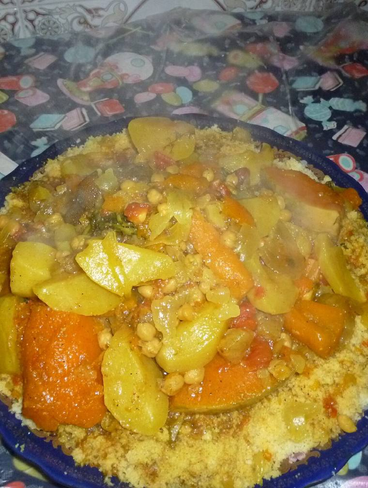

Cuisine du Maghreb

Cuisine du Maghreb
Couscous royal
Préparation : 40 min
Cuisson : 1 h 30
Ingrédients (pour 6 personnes)
- 400 g d’épaule d’agneau désossée
- 6 cuisses de poulet
- 6 merguez
- 600 g de semoule moyenne
- 6 carottes
- 4 navets
- 3 courgettes
- 1 aubergine
- 1 branche de céleri
- 2 oignons
- 250 g de pois chiches cuits
- 2 l de bouillon de volaille
- 70 g de concentré de tomate
- 2 cuillères à café de ras el-hanout
- 2 cuillères à café de paprika
- safran, huile d’olive, beurre, sel
Quantités adaptées. Les temps de cuisson ne sont pas recalculés.
- Dorer l’agneau en morceaux, ajouter les oignons, puis bouillon, concentré, épices et sel. Mijoter 30 minutes.
- Dorer le poulet, l’ajouter avec carottes, navets et céleri, cuire 25 minutes.
- Ajouter courgettes et aubergine, cuire 20 minutes, puis pois chiches et safran 10 minutes.
- Verser sur la semoule salée et huilée le même volume d’eau bouillante, couvrir 5 minutes, égrener au beurre.
- Griller les merguez bien à cœur au dernier moment. Servir bouillon, légumes et viandes à part.
D’après une recette de Jardiner Malin. Texte reformulé, verres convertis, cuissons échelonnées.